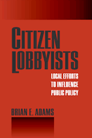

<body bgcolor="#FFFFFF" text="#000000" link="#0000FF" vlink="#CC0000" alink="#CC0000"><center><hr width="350" size="1" align="center" noshade>How do ordinary citizens become involved in local politics?<hr width="350" size="1" align="center" noshade><p><a href="https://cdcshoppingcart.uchicago.edu/Cart/ChicagoBook.aspx?ISBN=9781592135691&&PRESS=temple" target="_top">Buy this book!</a> | <a href="https://cdcshoppingcart.uchicago.edu/Cart/Cart.aspx?PRESS=temple" target="_top">View Cart</a> | <a href="https://cdcshoppingcart.uchicago.edu/Cart/Cart.aspx?PRESS=temple" target="_top">Check Out</a></p><p></p></center><!--none//--><h1>Citizen Lobbyists</h1>
<H2>Local Efforts to Influence Public Policy</H2>
<h3>Brian Adams</h3>
<P>cloth 1-59213-569-2 $79.50, Dec 06, <FONT COLOR=#990033>Available</FONT>
<br>paper 1-59213-570-6 $31.95, Dec 06, <FONT COLOR=#990033>Available</FONT>
<br>Electronic Book 1-59213-571-4 $31.95 <FONT COLOR=#990033>Available</FONT>
<BR> 248 pp
5.5x8.25
13&nbsp;tables 1&nbsp;figure
</P><p><i>Citizen Lobbyists</i> explores how U.S. citizens participate in local government. Although many commentators have lamented the apathy of the American citizenry, Brian Adams focuses on what makes ordinary Americans become involved in and attempt to influence public policy issues that concern them. It connects theory and empirical data in a new and revealing way, providing both a thorough review of the relevant scholarly discussions and a detailed case study of citizen engagement in the politics of Santa Ana, a mid-sized Southern California city.
<p>After interviewing more than fifty residents, Adams found that they can be best described as "lobbyists" who identify issues of personal importance and then lobby their local government bodies. Through his research, he discovered that public meetings and social networks emerged as essential elements in citizens' efforts to influence local policy.
<p>By testing theory against reality, this work fills a void in our understanding of the actual participatory practices of "civically engaged" citizens.
<BR>&nbsp;<h2>Reviews</h2>
<p><i>"Adams' work makes an important and accessible contribution to understanding participation by providing a comprehensive analysis of citizen involvement in local policy processes in Santa Ana, California[.]... This book helps to advance knowledge of participation. Explaining patterns of participation by examining the characteristics of the policies in which citizens become involved is extremely unique and insightful; questions concerning who participates remain common in this field. The in-depth nature of the study--especially its theoretical grounding, the provision of methodological rationales, and the successful integration of both quantitative and qualitative data--is an extremely positive quality. Adams attention to common themes and their exceptions makes the complexity of participation come to life.... [T]he book does make a considerable contribution to understanding participation and has the potential to enhance efforts to improve participatory policy analysis."</i>
<br>&#151<b><I>The Journal of Sociology and Social Welfare</I></b>
<p><i> "This book is a valuable contribution to the literature on grassroots politics in American communities.... In his focus on the issues that prompt participation and on the nature of the citizen lobbying responses that result, Brian Adams plows new ground in the study of citizen activism. </i>Citizen Lobbyists<i> is a worthwhile read." </i><br>&#151<b><I>Urban Affairs Review</I></b>
<BR>&nbsp;<P><p>&nbsp;&nbsp;<font color="#3152A5">Also available in e-book</font></p></P><BR>&nbsp;<br>
<h2>Contents</h2><P>
<p>Acknowledgements
<br><b>Part I: Introduction</b>
<br>1. Introduction
<br>2. Citizen Efforts to Influence Local Policy
<br><b>Part II: Participation Across Local Policies</b>
<br>3. Policy Characteristics and Patterns of Participation
<br>4. Policy Entrepreneurs and the Opportunity to Participate
<br>5. Local Newspapers and Participation
<br>6. Social Conflict and Participation
<br><b>Part III: How Citizens Participate</b>
<br>7. Participatory Strategies and Tactics: An Overview
<br>8. Public Meetings and the Democratic Process
<br>9. The Political Value of Social Networks
<br><b>Part IV: Conclusion</b>
<br>10. The Practice of Local Democracy
<p>Notes
<br>Appendix: Policies Discussed by Interview Respondents
<br>Tables and figures
<br>References
</P><BR>&nbsp;<H2>About the Author(s)</H2>
<table><tr><td valign="top"><img src="/tempress/authors/1883_au.gif" height="90" width="75"></td><td width="100%" valign="middle"><p><b>Brian E. Adams</b> is Assistant Professor in the Political Science Department at San Diego State University.</P></td></tr></table>
<BR><H2>Subject Categories</H2>
<p><A HREF="/tempress/political.html" TARGET="_top">Political Science and Public Policy</a>
<BR><A HREF="/tempress/sociology.html" TARGET="_top">Sociology</a>
<BR><A HREF="/tempress/urban.html" TARGET="_top">Urban Studies</a>
</p>
<p align="center"><a href="https://cdcshoppingcart.uchicago.edu/Cart/ChicagoBook.aspx?ISBN=9781592135691&&PRESS=temple" target="_top">Buy this book!</a> | <a href="https://cdcshoppingcart.uchicago.edu/Cart/Cart.aspx?PRESS=temple" target="_top">View Cart</a> | <a href="https://cdcshoppingcart.uchicago.edu/Cart/Cart.aspx?PRESS=temple" target="_top">Check Out</a></p><p><font face="Arial" size="1"><a href="copyright.html" onMouseOver="window.status='Web Copyright Policy';return true;" onMouseOut="window.status=''" title="Web Copyright Policy">&copy;</a> 2015 <a href="http://www.temple.edu" target="new" onMouseOver="window.status='Link to Temple University home page';return true;" onMouseOut="window.status=''" title="Link to Temple University home page">Temple University</a>. All Rights Reserved. http://www.temple.edu/tempress/titles/1883_reg.html</font></p>